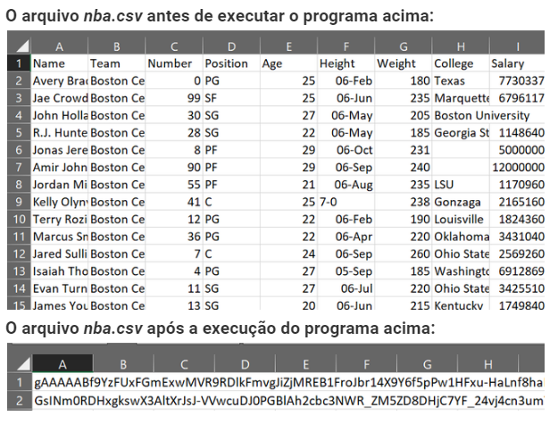
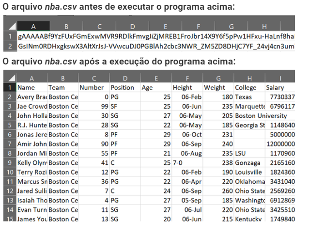

Criptografia é o ato de decodificar a mensagem de forma que apenas os usuários pretendidos possam vê-la. Nós criptografamos dados porque não queremos que ninguém os veja ou os acesse. Usaremos a biblioteca cryptography para criptografar um arquivo.
A biblioteca de criptografia usa um algoritmo simétrico para criptografar o arquivo. No algoritmo simétrico, usamos a mesma chave para criptografar e descriptografar o arquivo. O módulo fernet do pacote de criptografia possui funções integradas para a geração da chave, criptografia de texto simples em texto cifrado e descriptografia de texto cifrado em texto simples usando os métodos encrypt() e decrypt(), respectivamente. O módulo fernet garante que os dados criptografados usando-o não possam ser manipulados ou lidos sem a chave.
Vamos usar o arquivo nba.csv para realizar todas as operações.
Instalação:
A biblioteca cryptography pode ser instalada usando o comando abaixo:
pip install cryptography
Gerar chave para criptografar o arquivo
Na biblioteca de criptografia, existe um algoritmo de criptografia chamado fernet . Usaremos o módulo fernet para criptografar o arquivo.
# importando o módulo requerido
from cryptography.fernet import FernetFernet
Gerando a chave e salvando-a:
# geração de chave
key = Fernet.generate_key()
# string a chave em um arquivo
with open('filekey.key', 'wb') as filekey:
filekey.write(key)filekey.write(key)
O código acima irá gerar um arquivo com o nome filekey.key. O arquivo conterá uma linha, que é uma string agindo como uma chave, ou seja, J64ZHFpCWFlS9zT7y5zxuQN1Gb09y7cucne_EhuWyDM =
Criptografe o arquivo usando a chave gerada
Agora temos uma chave criptografada e um arquivo a ser criptografado. Agora escreva o código para criptografar este arquivo:
1.Abra o arquivo que contém a chave.
2.Inicialize o objeto Fernet e armazene-o na variável fernet.
3.Leia o arquivo original.
4.Criptografe o arquivo e armazene-o em um objeto.
5.Em seguida, grave os dados criptografados no mesmo arquivo nba.csv .
# abrindo a chave
with open('filekey.key', 'rb') as filekey:
key = filekey.read()
# usando a chave gerada
fernet = Fernet(key)
# abrindo o arquivo original para criptografar
with open('nba.csv', 'rb') as file:
original = file.read()
# criptografar o arquivo
encrypted = fernet.encrypt(original)
# abrir o arquivo no modo de gravação e
# gravar os dados criptografados
with open('nba.csv', 'wb') as encrypted_file:
encrypted_file.write(encrypted)encrypted_file.write(encrypted)

Descriptografar o arquivo criptografado
Temos que usar a mesma chave para descriptografar o arquivo:
1.Inicialize o objeto Fernet e armazene-o na variável fernet .
2.Le1ia o arquivo criptografado.
3.Descriptografe o arquivo e armazene-o em um objeto.
Em seguida, grave os dados descriptografados no mesmo arquivo
nba.csv.
# usando a chave
fernet = Fernet(key)
# abrindo o arquivo criptografado
with open('nba.csv', 'rb') as enc_file:
encrypted = enc_file.read()
# descriptografando o arquivo
decrypted = fernet.decrypt(encrypted)
# abrindo o arquivo no modo de gravação e
# gravando os dados descriptografados
with open('nba.csv', 'wb') as dec_file:
dec_file.write(decrypted)

2°criptografia
O módulo fernet do pacote de criptografia possui funções integradas para a geração da chave, criptografia de texto simples em texto cifrado e descriptografia de texto cifrado em texto simples usando os métodos criptografar e decriptografar, respectivamente. O módulo fernet garante que os dados criptografados usando-o não possam ser manipulados ou lidos sem a chave.
Métodos usados:
-generate_key(): Este método gera uma nova chave fernet. A chave deve ser mantida em segurança, pois é o componente mais importante para descriptografar o texto cifrado. Se a chave for perdida, o usuário não poderá mais descriptografar a mensagem. Além disso, se um intruso ou hacker obtiver acesso à chave, ele poderá não apenas ler os dados, mas também falsificá-los.
-criptografar (dados): criptografa os dados passados como parâmetro para o método. O resultado dessa criptografia é conhecido como “token Fernet”, que é basicamente o texto cifrado. O token criptografado também contém o carimbo de data / hora atual quando foi gerado em texto simples. O método encrypt lança uma exceção se os dados não estiverem em bytes.
Parâmetros:
-dados (bytes) - O texto simples a ser criptografado.
Valor de retorno: um texto cifrado que não pode ser lido ou alterado sem a chave. Ele é codificado em base64 seguro para URL e é conhecido como token Fernet.
-decrypt (token, ttl = None): este método descriptografa o token Fernet passado como um parâmetro para o método. Em uma descriptografia bem-sucedida, o texto simples original é obtido como resultado, caso contrário, uma exceção é lançada.
Parâmetros:
-token (bytes) - O token Fernet (texto cifrado) é passado para descriptografia.
-ttl (int) - Opcionalmente, pode-se fornecer um número inteiro como segundo parâmetro no método de descriptografia. O ttl denota o tempo de validade de um token. Se o token for mais antigo do que ttl segundos (a partir do momento em que foi originalmente criado), uma exceção é lançada. Se ttl não for passado como um parâmetro, a idade do token não será considerada. Se o token for de alguma forma inválido, uma exceção será lançada.
Valor de retorno: retorna o texto simples original.
Passos para escrever o programa:
Primeiramente, o pacote de criptografia precisa ser instalado usando o seguinte comando:
pip instalar criptografia
from cryptography.fernet import Fernet
key = Fernet.generate_key()
f = Fernet(key)
token = f.encrypt(b"welcome to geeksforgeeks")
print(token)
d = f.decrypt(token)
print(d)
Resultado:
b'gAAAAABfYMSL3Cjz8I8Sg7NwatdtTvOtqHtPrNDGXTGx4w1gW-9yvrMBUFz3bAWnwVk2WjcOrhjfAzyX7Z6M1IDbcRDhxPvd2dKPjelgeVcome'heek1AR = 'bwdflvvvc-bdKPjwypvvc ='
bwdflv4hddhddhdhdhdhdhdhdhdhdhdh = '
A saída descriptografada possui um 'b' na frente da mensagem original que indica o formato do byte. No entanto, isso pode ser removido usando o método decode() durante a impressão da mensagem original. O programa abaixo implementa o método decode().
from cryptography.fernet import Fernet
key = Fernet.generate_key()
f = Fernet(key)
token = f.encrypt(b"welcome to geeksforgeeks")
print(token)
d = f.decrypt(token)
print(d.decode())
Resultado:
b'gAAAAABfYMTfbEYTSsU6BCyXr9ArUIbpELTu5axUtWRfIxc4zzv3AktmOwdNSd1rH_
br
zrL4Qz7tDi1K067kLx0Ma3S828neekJlPlay9Y7Kel0_Z28neek
to gjlPlay9Y7Kel0_Zg3